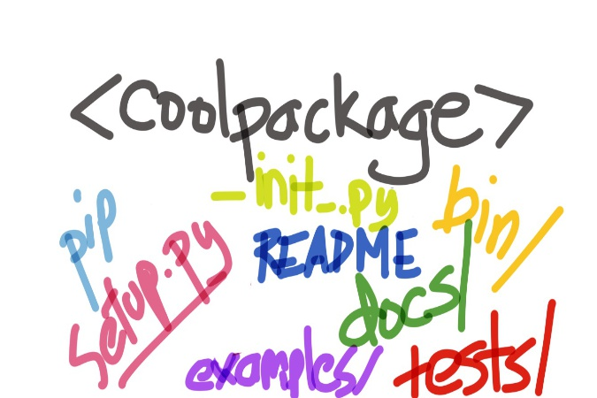

Wading In a Tide Pool of Choices, How to Write a Package in Python?

tl;dr: There's a standard for structuring a Python package and setup.py is at the heart of it.
Posted: 2017-03-06
I've pulled from several sources (see Resources below) and have mashed them together to create a brief synopsis of what I plan on doing for my first python package. I thought I'd share these findings with you. I've tried to be python ⅔ agnostic as needed.
To make the most barebones package we can use the following structure (if we include the right code in setup.py this could be a pip installable package in no time!). coolname_project is the GitHub repo name and what I refer to as the base folder. This is the structure of our barebones package:
coolname_project
coolname/
__init__.py
setup.py
An example of a more common structure I've seen:
coolname_project
coolname/
__init__.py
somecoolmodule.py
command_line.py
test/
test_somecoolmodule.py
test_command_line.py
docs/
greatdoc.txt
bin/
runsomestuff.sh
examples/
snippet.py
setup.py
README
Keep reading to find out what goes in these folders and files.
A very quick example of a barebones package
To __init__.py add this:
from __future__ import print_function
def foo():
print(42)
Now we can use our brand new package in python:
>>> import coolname
>>> coolname.foo()
Add the following to setup.py (more should go here and we'll see in a bit, but this is barebones right now):
from setuptools import setup
setup(name='coolname',
version='0.1',
description='The coolest package around',
url='http://github.com/<your username>/coolname_project',
author='Your Name',
author_email='name@example.com',
license='MIT',
packages=['coolname'],
zip_safe=False)
Adding a setup.py with certain info allows us to be able to do an awesome thing: pip install our package (here, locally). In our base package folder just type:
pip install .
Congrats! You have an awesome, little package (although it doesn't do anything very cool yet - that's up to you!).
Note: the setup.py is a powerful tool and will likely contain much, much more like dependency specifications, more metadata around the package, entry points, testing framework specs, etc.
Read on...the dual-purpose README
Don't you just love reusability?
If we write our README in reStructuredText format it not only will look good on GitHub, it'll serve as the long_description or detailed description of our package on PyPi. To make sure this happens we need a file called MANIFEST.in as well. MANIFEST.in also does some more useful things (see Jeff Knupp's article in Resources below).
So, we could, for example, have in our README.rst file:
The Coolest Package Ever
--------
To use (with caution), simply do::
>>> import coolname
>>> coolname.foo()
The in our MANIFEST.in (this file does other things down the road, but for now we'll use it to include our README):
include README.rst
Summary of the folder/files in a package
This is what I've gleaned so far from guides.
Basics:
coolname/ — the source folder with sub-modules (e.g. sub-module file called dosomething.py) and containing an __init__.py file (usually empty, but req'd for installation)
coolname/test/ — package folder to hold tests; place files that begin with "test" such as test_dosomething.py so that programs like pytest can find them and execute.
NOTE: There's an alternative test folder structure where the test-containing folder is named tests (plural) and placed at the base of the package (with setup.py) - check out this doc on pytest'ing and folder structures.
setup.py — script to install/test the package and provide metadata (e.g. the long_description for PyPi) - necessary to have a pip installable package.
README — basic information on the package, how to use, how to install, etc.
bin/ - executables folder (non-py files)
Often included:
docs/ — documentation folder for the package (as .txt, .md, etc. — need to indicate this folder in setup.py if you want it in distribution)
examples/ - a folder with some samples and code snippets of package usage
scripts/ — folder for command line tools like entry points (e.g. with a main())
Makefile — a file sometimes included for running the unit tests and more
Note: if there's only one file containing all the source code you can skip creating the /coolname project folder with the __init__.py and just place the source code file in the base directory.
References and places to go for more
Check out the python-packaging guide which walks you through pip-friendly package creation here (although it's targeted for python 2).
Check out Open Sourcing a Python Project the Right Way for a detailed package dev workflow with tons of sample code and great explanations by Jeff Knupp.
Jake VanderPlas has a great blog post with videos talking about writing python packages and testing with PyTest among other things here.
Check out the do's and don'ts here for a quick "do/don't-do" synopsis around packaging in python by Jean-Paul Calderone.